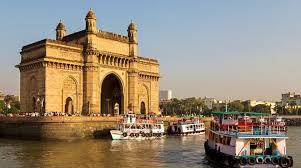
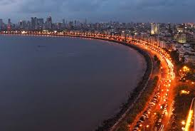
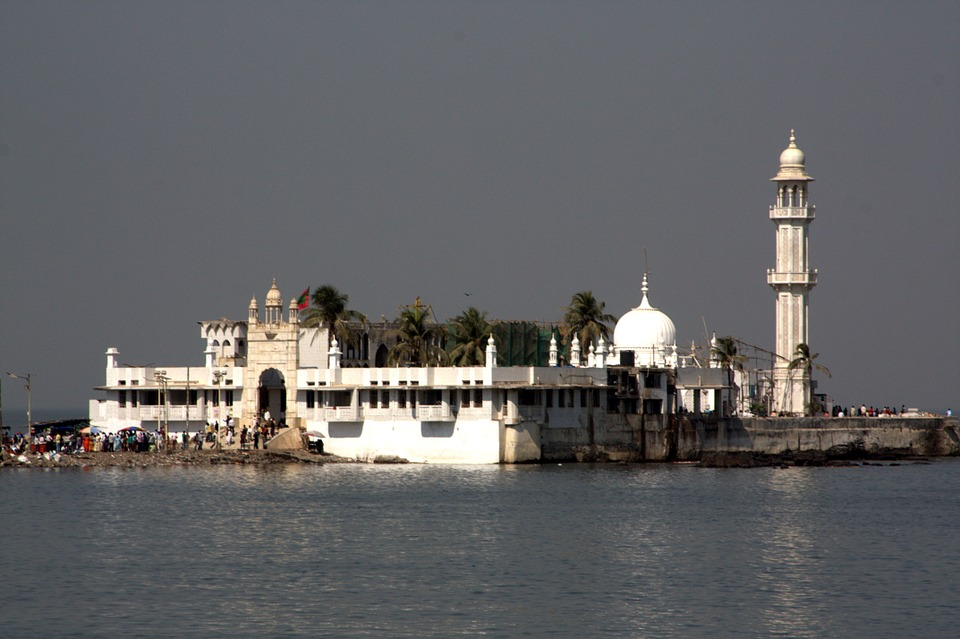

 The Gateway of India is located on the waterfront at Apollo Bunder area at the end of Chhatrapati Shivaji Marg in South Mumbai and overlooks the Arabian Sea. The monument has also been referred to as the Taj Mahal of Mumbai, and is the city's top tourist attraction. MUMBAI
 Bordering the Arabian Sea, this famous road is a popular spot for watching sunsets, and is gorgeous when lit up at night.The scenic beauty of the perfectly lined palm trees offers its visitors an enthralling experience. Marine Drive is also referred to as 'Queen's necklace', because the street lights make the road look like a string of pearls and create an illusion of a necklace, when viewed at night from any elevated point along the pathway of the drive.
 The Haji Ali Dargah is a mosque and dargah (tomb) located on an islet off the coast of Worli in the southern part of Mumbai. Near the heart of the city proper, the dargah is one of the most recognisable landmarks of Mumbai